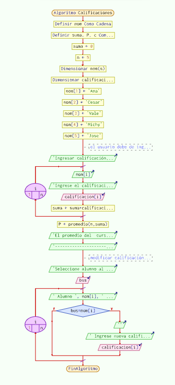

Pseint pseudocode blog
Crear un array para almacenar las calificaciones de 5 alumnos en un curso ingresando por consola, sacando.

Funcion P <- promedio(n,suma)
P <- suma/n
FinFuncion
Algoritmo Calificaciones
Definir nom Como Cadena
Definir suma, P, c Como Real
suma <- 0
n <- 5
Dimensionar nom(n)
Dimensionar calificacion(n)
nom[1] <- 'Ana'
nom[2] <- 'Cesar'
nom[3] <- 'Vale'
nom[4] <- 'Michy'
nom[5] <- 'Jose'
// el usuario debe de ingresar las calificaciones de los alumnos obtenidas en Matematicas
Escribir 'Ingresar calificacion de matematicas a los siguientes alumnos:'
Para i<-1 Hasta n Hacer
Escribir nom[i]
Escribir 'Ingrese el calificacion de ', nom[i], ' '
Leer calificacion[i]
suma <- suma+calificacion[i]
FinPara
P <- promedio(n,suma)
Escribir 'El promedio del curso de matematicas es: ', P
Escribir '------------------------------------------------------------'
// modificar calificacion de alumno
Escribir 'Seleccione alumno al cual se le modificar su calificacion'
Leer bus
Para i<-1 Hasta n Hacer
Escribir ' Alumno ', nom[i], ' obtuvo ', calificacion[i], ' en matemática'
Si bus=nom[i] Entonces
Escribir ''
Escribir ' Ingrese nueva calificacion'
Leer calificacion[i]
FinSi
FinPara
FinAlgoritmo